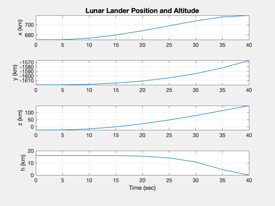
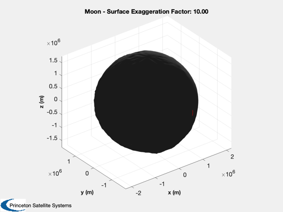
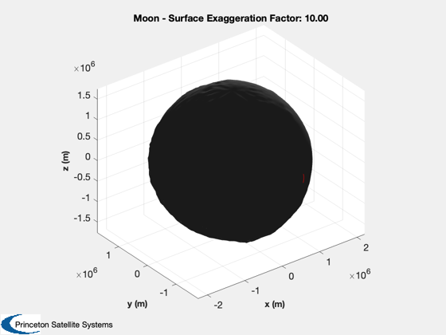

Demonstrate lunar lander guidance
Simulates in the moon fixed frame.
See also: RHSRVPlanetFixed, Constant, MoonRot, El2RV, LoadLunarTopography, AltitudeSH, TimeLabl, RK4
Contents
%-------------------------------------------------------------------------- % Copyright (c) 2015 Princeton Satellite Systems, Inc. % All rights reserved. %-------------------------------------------------------------------------- % Since 2016.1 %-------------------------------------------------------------------------- clear q
User inputs
thrust = 45040; % 45040; % N iSp = 311; % s g = 9.806; % m/s^2 massOrbIn = 30*thrust/(iSp*g); h0 = 15; % Inital altitude (km) tEnd = 2*86400; % End time (sec) dT = 5; % Time step (sec) massFuel = 8200 - massOrbIn; % Fuel (kg) (Lunar Module) inc = pi/2; % Orbit inclination (rad) jD0 = Date2JD([2017 4 15 0 0 0]); nH = 72; % Number of harmonics in topology model rotModel = 'mean';
Set up the simulation
% Constant kmToM = 1000; % Default data d = RHSRVPlanetFixed; d.rVStruct.mu = Constant('mu moon'); d.rVStruct.jD0 = jD0; d.rVStruct.massDry = 10334 - massFuel + 4700; % Includes ascent stage d.rVStruct.bFun = @MoonRot; d.rVStruct.bFunData = rotModel; d.dataFunThrust.uE = iSp*g; d.dataFunThrust.thrust = thrust; % Initial orbit rMoon = Constant('equatorial radius moon'); el = [rMoon + h0; inc; 0; 0; 0; 0]; % Polar orbit [r,v] = El2RV(el,[],d.rVStruct.mu); % Transform into moon fixed coordinates [g,omega] = MoonRot( jD0, rotModel ); v = g*(v - Cross(omega,r)); r = g*r; % Lhnar topography [s,c] = LoadLunarTopography( nH ); % The initial state x = [r;v;massFuel];
Simulate
n = ceil(tEnd/dT); xP = zeros(length(x)+1,n); t = 0; for k = 1:n % Altitude h = AltitudeSH( x(1:3), s, c, nH ); % Control d.dataFunThrust.uThrust = -Unit(x(4:6)); % Plotting xP(:,k) = [x;h]; % Terminate at zero altitude if( h <= 0 ) break; end % Propagate one step x = RK4( @RHSRVPlanetFixed, x, t, dT, d ); t = t + dT; end % Account for the termination of the sim due to altitude xP = xP(:,1:k);
Plot the results
[t,tL] = TimeLabl((0:(k-1))*dT);
yL = {'x (km)' 'y (km)' 'z (km)' ...
'v_x (km/s)', 'v_y (km/s)', 'v_z (km/s)' ...
'Fuel (kg)' 'h (km)'};
% This is to make the plots look nice
k = xP(7,:) < 0;
xP(7,k) = 0;
k = xP(8,:) < 0;
xP(8,k) = 0;
% 2D plots
k = [1:3 8];
Plot2D( t, xP(k,:), tL, yL(k), 'Lunar Lander Position and Altitude');
k = 4:7;
Plot2D( t, xP(k,:), tL, yL(k), 'Lunar Lander Velocity and Fuel');
% 3D plots
[q.r, q.lambda, q.theta] = RSHMoon; % Clementine model
q.rEq = 1738000; % m
q.name = 'Moon';
PlanetWithTerrain( q, 10 );
hold on
plot3(xP(1,:)*kmToM,xP(2,:)*kmToM,xP(3,:)*kmToM,'r')
%--------------------------------------
% PSS internal file version information
%--------------------------------------
% $Id: cda1628c4f4daec6b932811c9c69067249f94ce5 $
  
